Chapter 6 Introducing project datasets
- Goals for today’s class:
- Learning to use the project datasets
- Varieties of Democracy (VDem)
- Canadian Election Study 2021
- World Values Survey (Wave 7)
- Asian Barometer (Wave 5)
- Learning to use the project datasets
6.2 Overview: Use of data sets
This is the general approach we will take to use the datasets for the project assignment.
Step 1: Select one of the four data sets
Each data set focuses on a different type of data. You will be selecting variables from one dataset for your term project. Take a look at the code book and decide which data set you want to use.
6.3 VDem
Look at the codebook, which can be found in the same folder as the dataset.
Step 2: Select your variables
Select the variables you want and assign them to the variable vars. I’ve selected
- Country name
- Country ID
- Year
- Political corruption index (v2x_corr)
- GDPpercapita (e_gdppc)
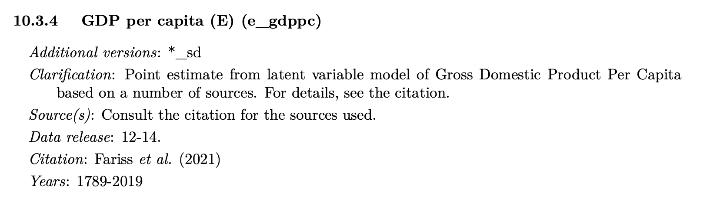
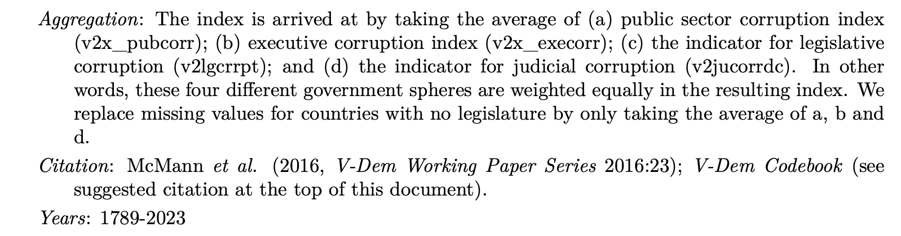
Step 3: Trim down the data set (select a year)
Select a year for analysis and use the filter function to extract the data for that year. Please note that the VDem file in your project folder is a reduced version of the original dataset. You can find the original dataset here.
Step 4: Examine the univariate distribution and bivariate relationship
Look at the summary statistics
## country_name country_id year v2x_corr
## Length:179 Min. : 3.00 Min. :2019 Min. :0.0020
## Class :character 1st Qu.: 51.50 1st Qu.:2019 1st Qu.:0.2190
## Mode :character Median : 96.00 Median :2019 Median :0.5300
## Mean : 99.12 Mean :2019 Mean :0.4906
## 3rd Qu.:145.00 3rd Qu.:2019 3rd Qu.:0.7475
## Max. :236.00 Max. :2019 Max. :0.9560
##
## e_gdppc
## Min. : 0.735
## 1st Qu.: 4.060
## Median :11.017
## Mean :17.827
## 3rd Qu.:25.777
## Max. :92.389
## NA's :5Univariate: Examine each variable
I am going to plot histograms because both of the variables are continuous numerical measures. If you choose a categorical variable, you would visualize the univariate distribution using a bar chart.
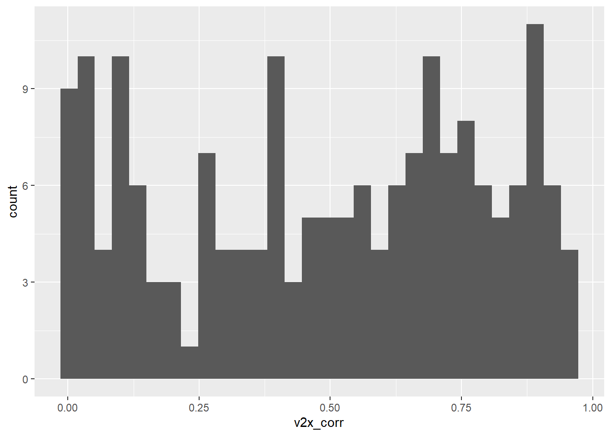
6.4 World Values Survey (Wave 7, 2017-2022)
Step 3: Trim down your data set
For the WVS data set, select one country
WVS dataset includes a collection of individual surveys in multiple countries. As such, it creates a nested data structure, where we would expect individual-level factors to be confounded by country-level differences. For simplicity, we explore variations within countries.
Step 4: Examine the univariate distribution and bivariate relationship
The response categories contain a mix of ordinal and nominal categories.
## B_COUNTRY_ALPHA Q73 Q236
## Length:4018 Min. :1.000 Min. :1.000
## Class :character 1st Qu.:2.000 1st Qu.:2.000
## Mode :character Median :3.000 Median :2.000
## Mean :2.602 Mean :2.487
## 3rd Qu.:3.000 3rd Qu.:3.000
## Max. :4.000 Max. :4.000Examine the variables
Examine the variables to make sure they are as you expect them to be after the transformation.
## B_COUNTRY_ALPHA Q73 Q236
## Length:4018 Min. :1.000 Min. :1.000
## Class :character 1st Qu.:2.000 1st Qu.:2.000
## Mode :character Median :3.000 Median :2.000
## Mean :2.602 Mean :2.487
## 3rd Qu.:3.000 3rd Qu.:3.000
## Max. :4.000 Max. :4.000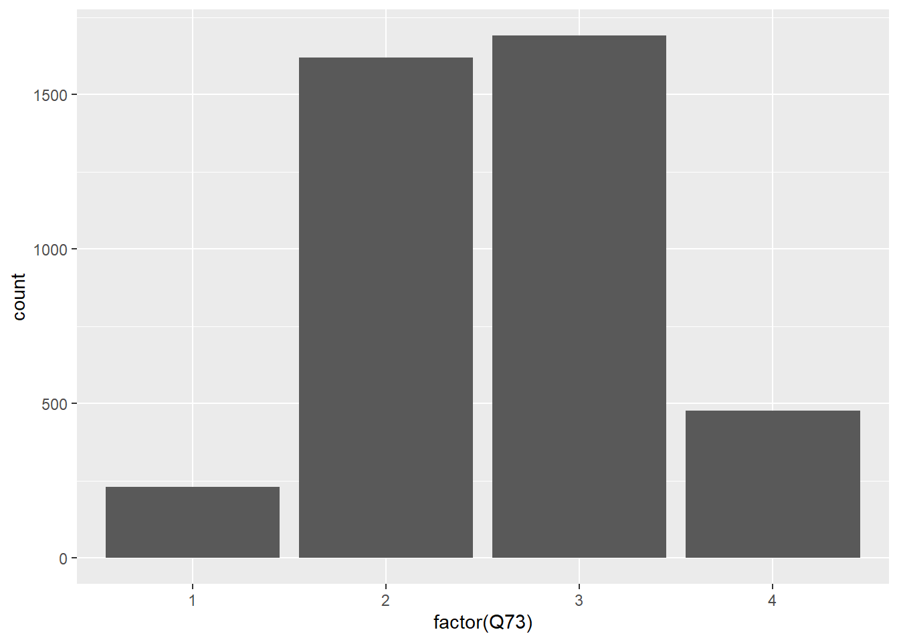
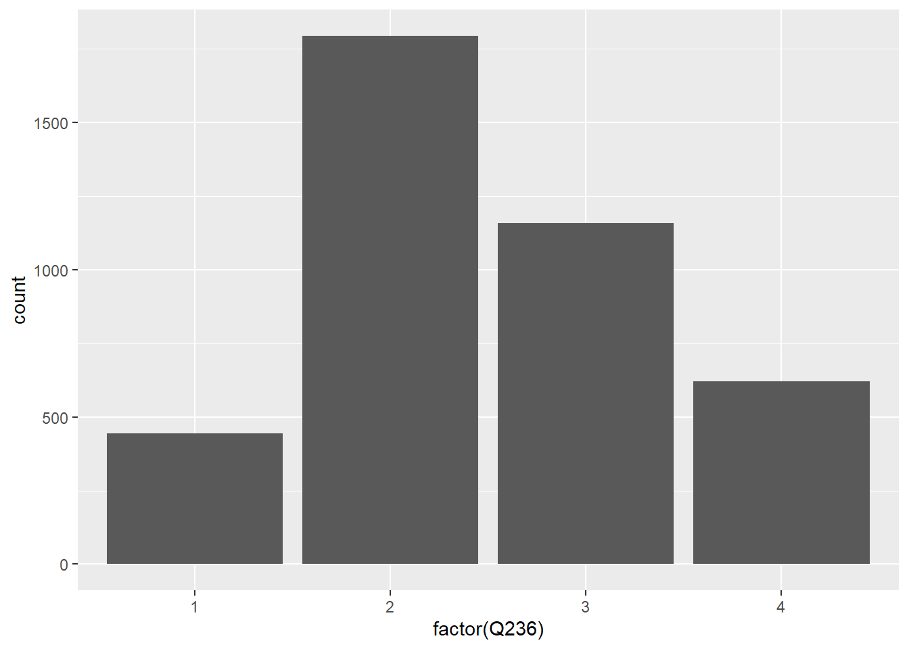
|
Political system: Having experts, not government, make decisions according to wh |
Confidence: Parliament |
Total | |||
|---|---|---|---|---|---|
| A great deal | Quite a lot | Not very much | None at all | ||
| Very good |
42 18.3 % |
164 10.1 % |
171 10.1 % |
67 14 % |
444 11.1 % |
| Fairly good |
85 37 % |
700 43.2 % |
829 49 % |
180 37.7 % |
1794 44.6 % |
| Fairly bad |
62 27 % |
493 30.5 % |
470 27.8 % |
133 27.8 % |
1158 28.8 % |
| Very bad |
41 17.8 % |
262 16.2 % |
221 13.1 % |
98 20.5 % |
622 15.5 % |
| Total |
230 100 % |
1619 100 % |
1691 100 % |
478 100 % |
4018 100 % |
χ2=51.496 · df=9 · Cramer’s V=0.065 · p=0.000 |
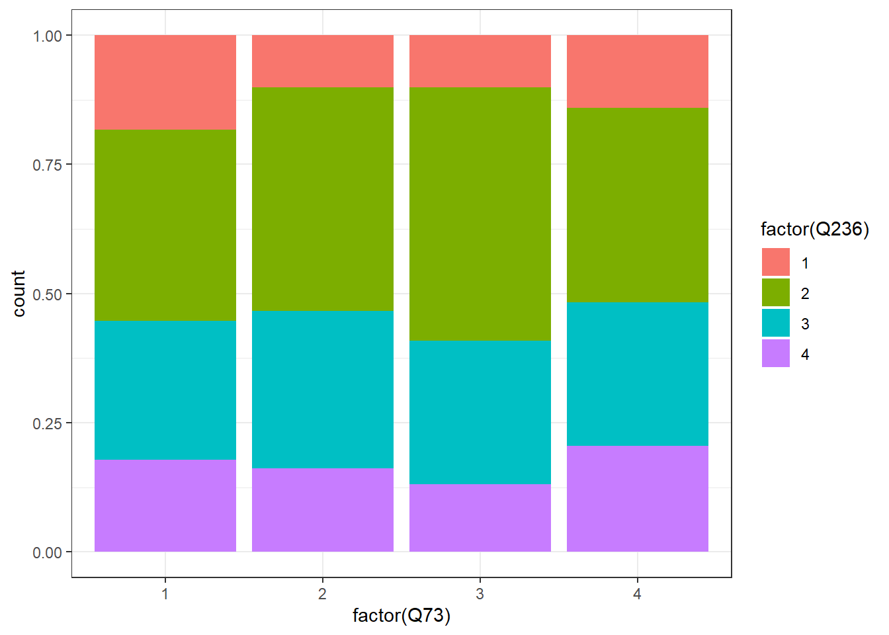
df_recode |>
ggplot(aes(x=factor(Q73),fill=factor(Q236))) +
geom_bar(position="fill") +
theme_bw() +
xlab("Lack of Confidence in Parliament") +
ylab("Proportion") +
scale_fill_manual(name="Expert versus Govt", #legend label
values = c("navyblue","blue","skyblue","grey"), #color specification
labels = c("Very Good","Fairly Good", "Fairly Bad", "Very Bad"))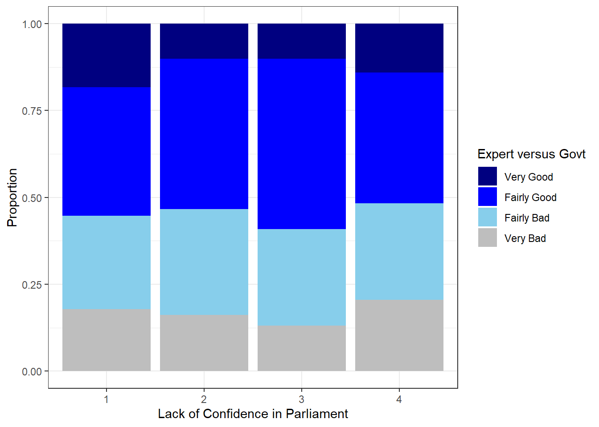
Other countries
United States
read_rds("Project/WVS/WVS_Cross-National_Wave_7_rds_v6_0.rds") |>
select(vars) |>
filter(B_COUNTRY_ALPHA=="USA") |>
mutate(Q73=if_else(Q73<0,
NA,
Q73),
Q236=if_else(Q236<0,
NA,
Q236)) |>
na.omit() |>
ggplot(aes(x=factor(Q73),fill=factor(Q236))) +
geom_bar(position="fill") +
theme_bw() +
xlab("Lack of Confidence in Parliament") +
ylab("Proportion") +
scale_fill_manual(name="Expert versus Govt", #legend label
values = c("navyblue","blue","skyblue","grey"), #color specification
labels = c("Very Good","Fairly Good", "Fairly Bad", "Very Bad"))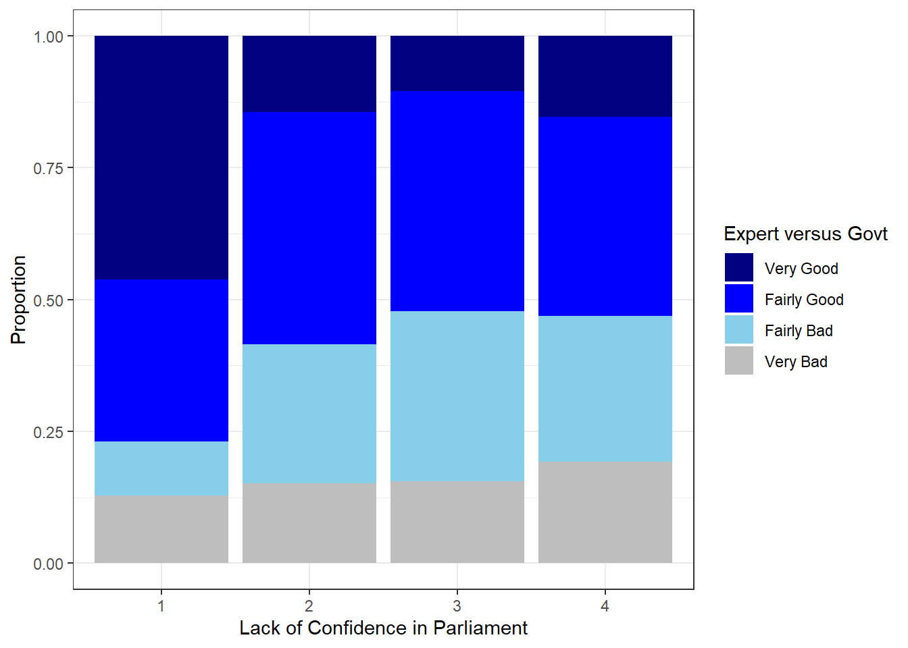
Japan
read_rds("Project/WVS/WVS_Cross-National_Wave_7_rds_v6_0.rds") |>
select(vars) |>
filter(B_COUNTRY_ALPHA=="JPN") |>
mutate(Q73=if_else(Q73<0,
NA,
Q73),
Q236=if_else(Q236<0,
NA,
Q236)) |>
na.omit() |>
ggplot(aes(x=factor(Q73),fill=factor(Q236))) +
geom_bar(position="fill") +
theme_bw() +
xlab("Lack of Confidence in Parliament") +
ylab("Proportion") +
scale_fill_manual(name="Expert versus Govt", #legend label
values = c("navyblue","blue","skyblue","grey"), #color specification
labels = c("Very Good","Fairly Good", "Fairly Bad", "Very Bad"))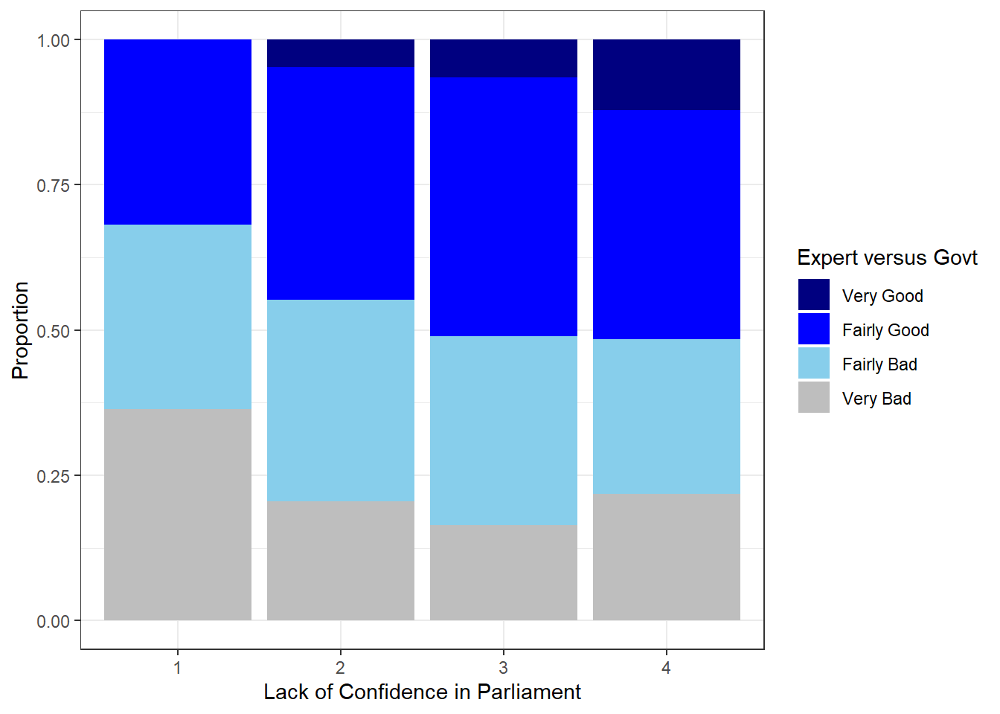
6.5 Asian Barometer (Wave 5, 2018-2021)
Step 2: Select your variables
Look at the codebook and choose your variables. I have chosen the following
Independent variable: Views toward the US
175 Does the United States do more good or harm to Asia?
184: General speaking, the influence the United States has on our country is?
DV: Views toward democracy (1 strongly agree - 4 strongly disagree)
169 Democratic regimes are indecisive and full of problemsStep 3: Trim down your data set
For the Asian Barometer data set, select one country
df <- read_dta("Project/asianbarometer_wave5/20230504_W5_merge_15.dta") |>
select(vars) |>
filter(country==3) # South Korea (refer to codebook)
summary(df)## country Year q175 q184 q169
## Min. :3 Min. :2019 Min. :1.000 Min. :1.000 Min. :1.00
## 1st Qu.:3 1st Qu.:2019 1st Qu.:2.000 1st Qu.:2.000 1st Qu.:3.00
## Median :3 Median :2019 Median :2.000 Median :3.000 Median :3.00
## Mean :3 Mean :2019 Mean :2.797 Mean :3.068 Mean :3.14
## 3rd Qu.:3 3rd Qu.:2019 3rd Qu.:3.000 3rd Qu.:3.000 3rd Qu.:4.00
## Max. :3 Max. :2019 Max. :9.000 Max. :9.000 Max. :9.006.6 Canadian Election Study 2021
Step 4: Examine the univariate distribution and bivariate relationship
Look at the summary statistics
Note that the ordinal variables are measured as numerical variables.
## cps21_news_cons cps21_govt_confusing
## Min. :1.000 Min. :1.000
## 1st Qu.:3.000 1st Qu.:2.000
## Median :4.000 Median :3.000
## Mean :3.791 Mean :2.563
## 3rd Qu.:5.000 3rd Qu.:3.000
## Max. :7.000 Max. :5.000
## NA's :48Examine the variables
Bar chart for ordinal variables. Remember to change the numerical variable into
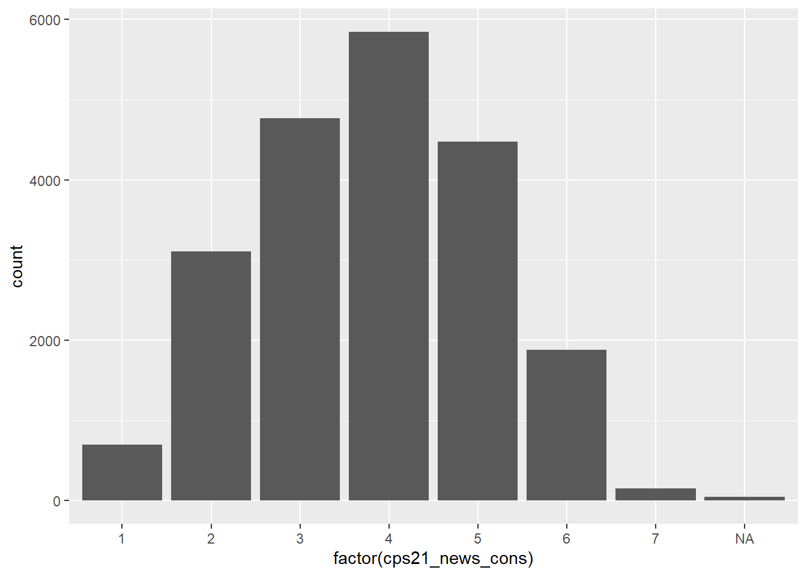
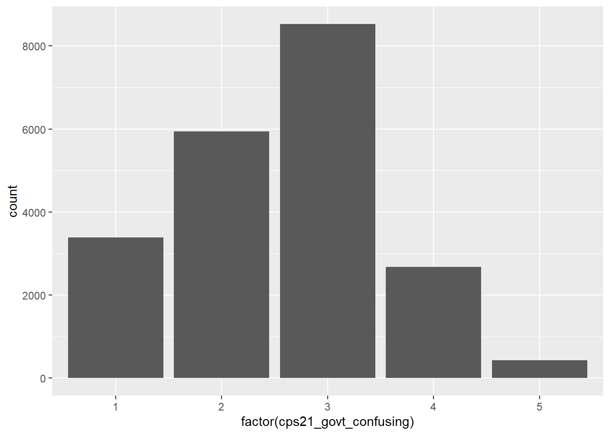